長篇專題
急症室價格上調122%：能否破解「輕症擠重症」的輪候困境
2026年起，香港公營急症室診金大幅調整——危殆及危急免費，緊急、次緊急及非緊急則升至400港元。這次改革能否真正引導輕症患者轉向私營，縮短輪候時間？
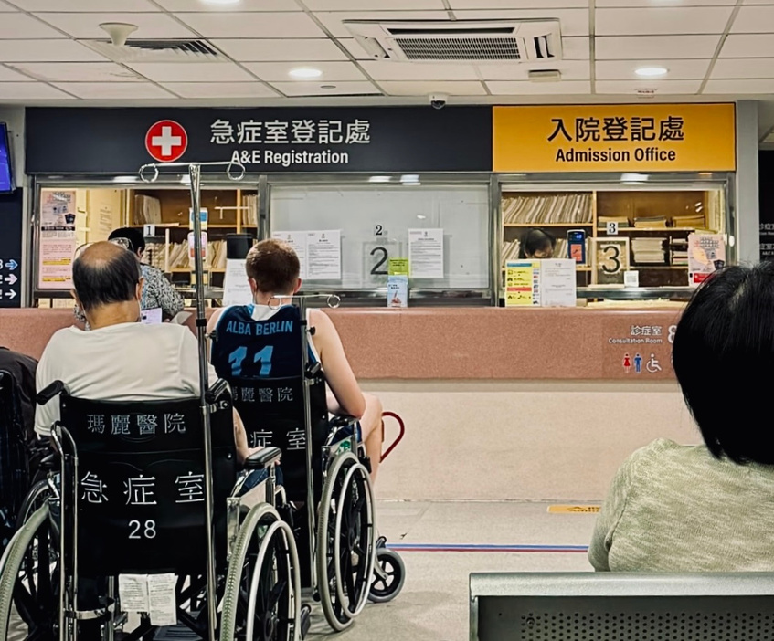
政策落地
急症室大漲價
2025年3月25日，香港醫院管理局頒布了《公營醫療收費調整條目》，並宣布將於2026年1月1日起正式實施，預示著香港公營醫療體系即將迎來近十幾年最重大的收費改革。該條目不僅涉及門診服務、社區服務等基本醫療項目的收費調整，還對病理檢驗、非緊急放射造影等相關醫療服務增設了梯級收費制度，旨在更好引導香港居民的就醫行為，為有需要的病人提供更加經濟高效的醫療服務。
在本次收費調整中，最引人矚目的差異當屬急症室的價格分級調整。對危殆及危急的患者，取消了現時180港元的收費，診金調整為免費；對緊急、次緊急及非緊急病人的收費卻大幅提升至每次診症400港元，漲幅高達122%。
為了在多項收費上調的同時盡可能減輕香港居民的醫療負擔，醫管局同步推出了評估退款制度和公營醫療服務項目全年收費上限制度，並加強了醫療保障措施。本著「能者共付、輕症共付」的收費改革原則，政府希望通過收費調整使香港公營醫療資源更多流向病情更危急的病人，減少政府在輕症患者身上的開支。
那麼本次公營醫療收費改革中，急症室收費的調整是否真的可以達成輕症診治的轉移，縮短公營醫療服務輪候時間，提升公營醫療體系的服務效率呢？
五級分流
難解輪候之痛
香港的公營系統在現階段主要面臨四大困境：系統失衡、資助錯配、服務浪費和求過於供，這些困境在就診過程中最直觀導致的現象就是排隊輪候。
香港的急症室輪候系統一直以來採取的是五級分流制。為確保病症較嚴重的病人盡早獲得診斷及治療，經驗豐富並接受過特別培訓的護士會在病人就診前，對病人的病情作出初步的評估及分流，根據病情的嚴重程度將病情由重至輕大致分為五類：第一類別危殆、第二類別危急、第三類別緊急、第四類別次緊急和第五類別非緊急，以此決定治療的先後順序。
香港醫療資源緊張而昂貴，公立醫院排隊問題嚴重。在2022/23財政年度，香港政府的醫療衛生經常性開支達2601億港元，其中34.5%花費在基層醫療，65.5%花費在專科及醫院、複雜及先進治療。統計數據顯示，在全年急症室就診的199.8萬人次中僅有約40%是危殆及危急病人，剩下的約60%都是後三類病人。大量非緊急病人湧入急症室不僅讓整日輪候時間延長，還有部分緊急病人未能獲得及時醫治。
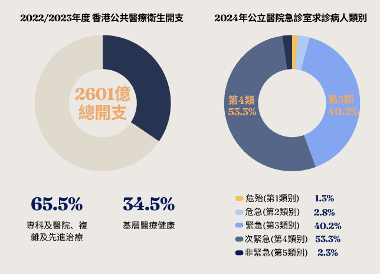
「我希望市民們明白：急診室的設立是為了處理最緊急的病人，讓前三類病人的輪候時間更短。至於第四、五類病人的輪候時間，這不是調整的主要考慮。」
醫管局總辦事處總行政經理 黃立己
醫管局在設立該制度的時候曾表示將盡力達成危殆類別及時診治，危急類別15分鐘內處理95%，緊急類別30分鐘內處理90%的服務目標。
官方統計的數據顯示，香港公營醫院的病人平均輪候時長約為54分鐘，其中病情級別從重到輕的平均輪候時長分別為0分鐘、7分鐘、25分鐘、113分鐘和125分鐘。就統計情況來看，這一目標基本達成，然而就緊急病人，2024年在30分鐘內得到診治的比率僅得76.6%，仍有很多慘痛的案例暴露出五級分流制在香港公營醫療資源緊缺狀態下的窮迫與困境。
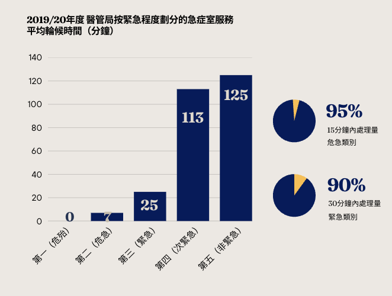
實際上，香港公營醫院的排隊現象遠遠沒有數據展示出來那麼樂觀。醫院管理局官網上實時更新的公營醫院等候時間參考大多在3–4小時，只有少數比較偏僻的公營醫院等候時間約為1小時。在流感高峰期時，求診人數上升，有時排隊輪候時間甚至會超過8小時。
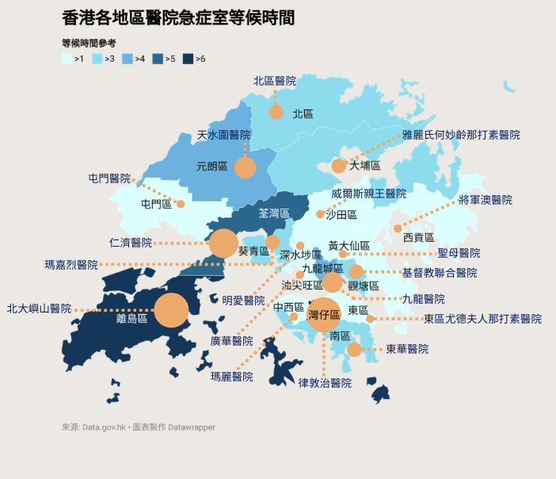
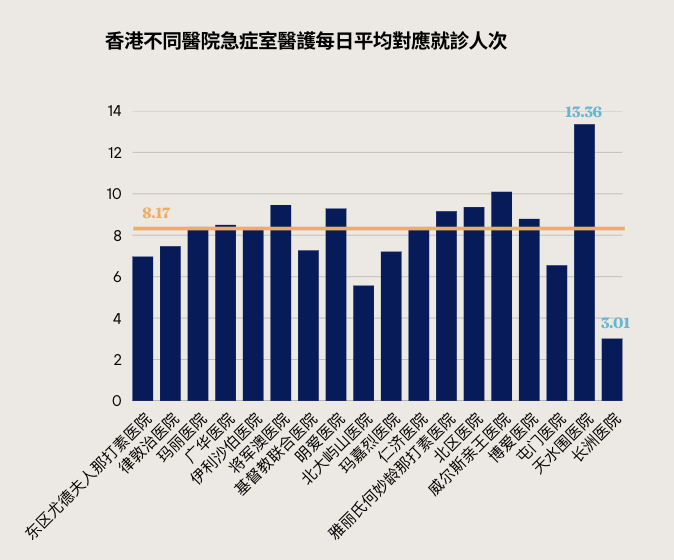
在這樣的環境下，很多病人不僅要遭受病痛的折磨，還要承受苦苦等待的煎熬，於身於心都讓在公營醫院的就醫體驗變得苦不堪言，改革迫在眉睫。
從0到400
收費漲價史：效果如何？
這已經不是香港政府第一次試圖通過漲價來走出公營醫療困境了。
2002年12月，醫管局急症室服務由以往的免費增加至100港元，首次施行公營醫療收費制。政府數據顯示，公營急症室收費加價至100港元後，2003年的求診人次迅速由加價前的238萬降到大約183萬，整體下跌了23.2%。2004年求診人次開始呈現逐漸回升的趨勢，在2005年度已回升到200萬人次以上，在接下來的幾年穩步上升並維持在大約220萬人次的水平。直到2016年，急症室的求診人次穩定在224萬，比2002年加價之前提升了6%，加之同期人口增長了6%，當年的收費提升降低了約12%對急症室的需求。
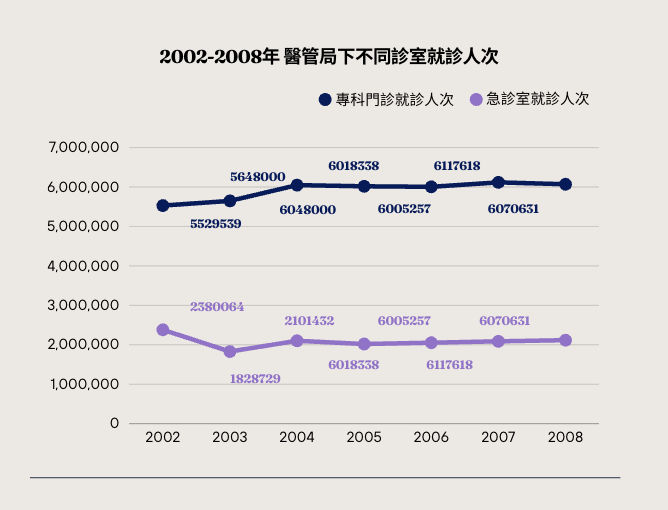
當時政府的資助水平約為成本的82%，隨著醫療成本的不斷增加，這一補貼比例在2015年一路上漲至92%。
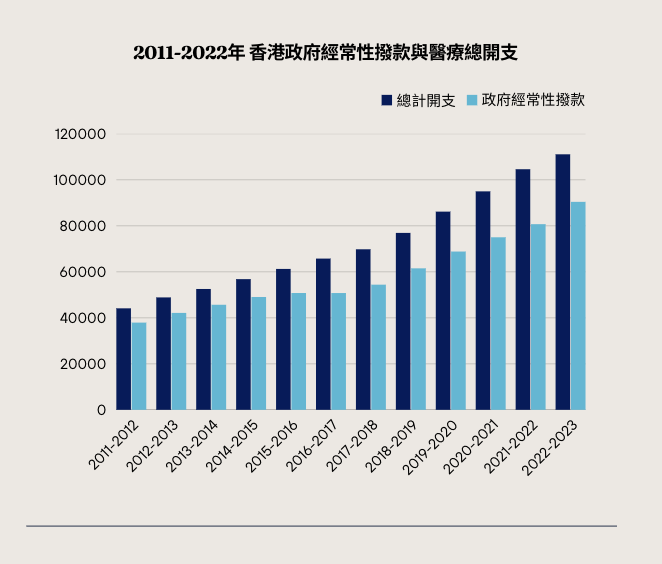
截至2016年，私人診所一般疾病收費的中位數大約在300港元，公私營收費差距超過200%。固定的價格差異導致了急症室的濫用，醫管局前主席梁智仁透露，以往急症室求診的病人中有高達三分之二的人士被歸類為「次緊急」和「非緊急」，比例偏高。
於是新的問題出現了。對於一些欠缺醫學認知的普通市民，他們難以分辨清楚自己病症的輕重緩急。另外也有不少病人是在夜間或假期，即私人診所停止提供服務的時候，前往急症室求診。
為了讓病人更準確地評估自己的身體狀況，政府不得不考慮增加「濫用」的成本。醫院管理局大會在2016年底通過了調整公營醫院收費的決議，其中急症室的收費被建議從100港元倍增至220港元。在2017年，醫管局對香港公營醫療項目的收費進行了再次調整，最終急症室的費用定為180港元。
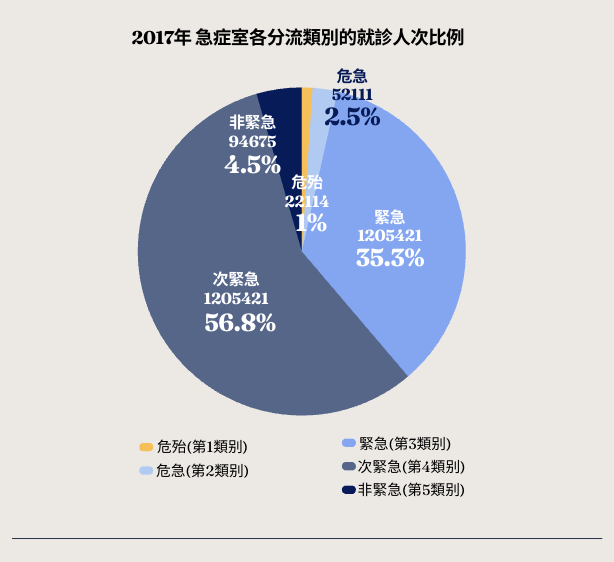
在該次調整收費後，原有基礎上轉向私營醫療服務的病人又增加了5%。針對這一變化，立法會醫議員梁熙表示，公營醫療收費的合理加幅不會讓市民在短時間內大量轉向私營醫療，因為私家醫院的診金通常在400港元以上，與公營醫院仍存在一段距離.
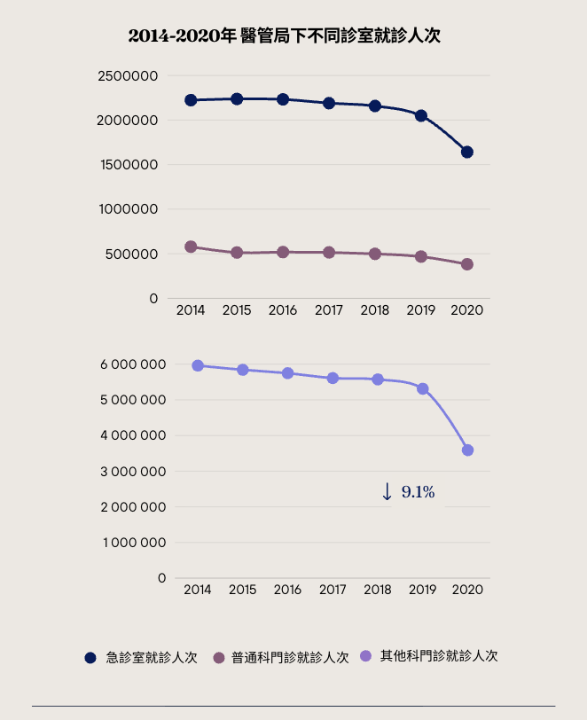
從政府公佈的公立醫院就診人次數據來看，這次收費調整後整體前往公立醫院的就診人次確實呈現出了下降趨勢，其中變化最為明顯的是其他科門診就診人次。而急症室在本次收費調整後也從2017年前220萬左右人次下降到200萬左右人次，整體下降比例大約為9.1%。其中前往就醫的五類患者占比也發生了變化：次緊急類出現了較明顯的下降，危殆和危急類則呈現出上升的趨勢。那麼當這次收費上調至400港元，幾乎與私人就診機構拉平，是否會有更多的非緊急病人轉向非公營醫療服務呢？
分流預期
急症室能否迎來就醫分流？
「我之前有試過去私家診所看病，基本上不用排隊，普通的感冒發燒一次診金也就350港元左右。」陳先生在接受採訪時表示，如果本次公營醫療急症室漲到400港元一次的話，以後可能都不會再考慮去公營醫院排隊看病了，「以前去主要是因為價格便宜，就算排隊時間比較長也還能接受，如果漲價到這種程度的話還不如去私人診所」。
私人診所其實就是小型執業診所，這同樣是香港醫療體系的重要構成部分。香港現下的私人診所數量約達5958所，這些診所相比公立及私立醫院來說數量多、分佈廣，並且無需預約。一般門診在200港元至500港元不等，在公營醫療收費調整後二者之間的差距所剩無幾。
除了私人診所，家庭醫生也是香港重要的醫療資源之一。2024年初，香港政府推出了「一人一家庭醫生」計畫，截至今日香港已有逾3100名家庭醫生。調查顯示，在有通常求診的西醫的人士中，53.3%表示其求診的第一選擇是他們的家庭醫生。家庭醫生每次診症的費用起步價通常在160港元至800港元不等，在急症室費用上漲之後，家庭醫生很可能成為一些慢性病患者更實惠的選擇。
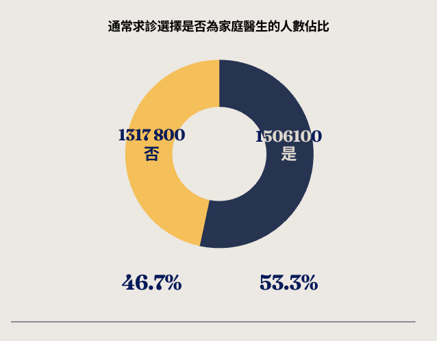
相較於之前兩次收費調整，這次改革最顯著的特點就是基本拉平了公營醫療系統與私人診所、家庭醫生的收費差距。聯繫香港當下的社會就醫狀況和過去的改革經驗，或許可以對香港2026共醫療收費調整後的就醫情況作出簡單的預測.
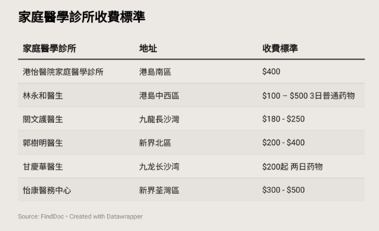
截至今年，私營醫院或診所的就診人次實際上已經遠遠超過了公營醫院的就診人次。
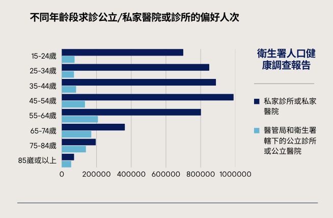
由於危殆病人和危急病人在調整後急症室就診費用全免，第一類、第二類病人在本次調整中幾乎不受醫療成本變化的影響，會繼續保持在公營醫院的就醫選擇。對於第三類緊急患者而言，雖然公營醫院價格有所上漲，但私營醫院治療該種類疾病的收費成倍增加，可能只有不到10%的人願意更改自己的就醫選擇。對於佔比約55%的第四、第五類人群來說，轉向私人診所等非公營醫療場所就診已經成為性價比更高的選擇。
2017年急症室收費加價後一年，急症室求診人數中為緊急、此緊急或非緊急病人的佔比約為94.6%。根據2024年急症室分流病人的比例推算，這三類別的求診人數有下降趨勢，因此約有95%到急症室的病人需支付的費用將會上升。
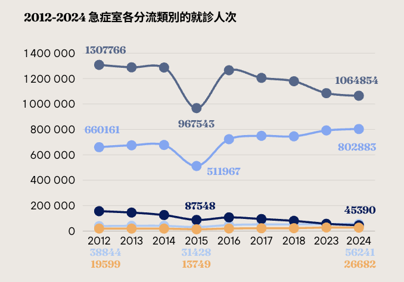
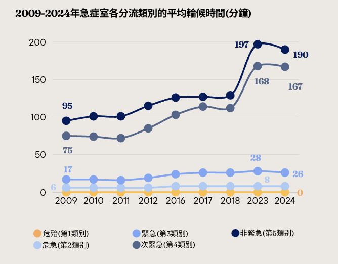
值得特別關注的是，香港公民的就醫選擇轉移情況不可能僅僅受到價格影響，地理位置、就醫習慣、醫療水平等因素同樣會影響居民們面對是否轉向私營時的選擇。另外，從數據上看，在就診人次中第三類病人和第四類病人明顯占大頭，第五類病人的轉移對於公營醫院的壓力減輕影響微乎其微。當部分第四類和第五類病人轉移後，公營醫院中第三類患者的占比將明顯變大，屆時是否可能產生醫療資源在第三類病人中分配不均的情況？就醫選擇的轉移又是否會導致政府的公營醫療自費收益降低？諸多問題，仍有待考量。
長期挑戰
漲價難治根
在記者會上，政府簡要闡明了本次改革受加強保障的病人群體——貧、急、重、危群體。按照官方預測，在該次改革後通過優化費用減免機制，香港預計可受惠的群體由現有費用全免30萬人增加至140萬人，並且每年約7萬名重症病人受惠於全年收費上限制度。
在收費上限制度中，一萬元封頂計畫並不包括自費醫藥器械，而重症治療的藥物一般價格都比較高昂，且大多數須由患者自費購買。因此當局在落實推行公營醫療收費改革之後給封頂計畫適用人群帶來的補助力度仍待考量。
除此之外，收費調整後，私人診所的收費雖然已經接近公營醫療的急症室費用，但它們提供的服務仍存在一個致命的缺陷——難以保障在半夜或公眾假期進行問診。這意味著，如果香港居民在半夜有突發性身體狀況，他們只能求助急症室或私營醫院。
「之前我家小孩半夜嘔吐，又不清楚是什麼原因症狀，也不知到底嚴不嚴重，看得我特別著急一心想讓她趕緊去醫院，私營醫院收費又好貴，只能去公營醫院急症室咯。」
關女士
目前香港有74間普通門診，但只有23間提供夜診，在週末夜診數量甚至只有14間。由於私家醫院和公營醫院急症室收費相差甚遠，基層市民可以說是別無選擇。因此，即便高昂的急症室價格可能會「勸退」日間一部分輕症患者，香港醫療固有的醫療資源時間分配不均仍舊無可避免地給基層市民施加了更大的醫療開支壓力。
公營醫療費用上調後，雖然在短時間內可以優化香港的急症室資源配置，但是從長期健康發展的角度看，仍舊面臨著各種各樣的挑戰。
香港當今處在一個人口增加和人口老化階段，市民對公營醫療的總體需求只會不停增加，當中需要及時診治的急症也會隨著基數變大而增多，如何面臨未來越來越大的醫療壓力是一個值得思考的問題。
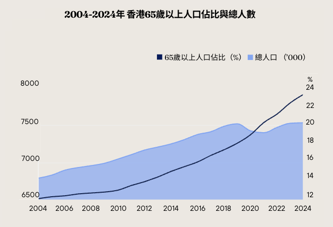
與此同時，香港的醫療成本近年來呈現出逐漸升高的趨勢，醫管局在公營醫療上的開支近十年增加了超過八成，如今每年的開支高達一億，這瘋狂的上漲速度已經遠遠超過了香港人口增加以及人口變老的速度，對於任何機構來講都是致命的。
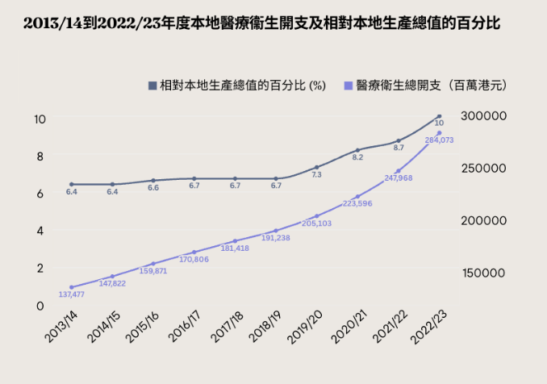
一味提高收費無法實現香港公營醫療長期穩定健康的發展，政府更應該考慮如何通過改變現有的公營醫療架構，從政策制度上限制公營醫療資源的濫用，提升公營醫療系統的運作效率。
公營醫療收費改革讓民眾看到了政府優化公營醫療的努力，但是如何交上一份更加完美高效的答卷仍舊應該是當局的不懈追求。
改革已上路，能否真正破解「輕症擠重症」，還要看配套措施與長期制度能否同步跟上。